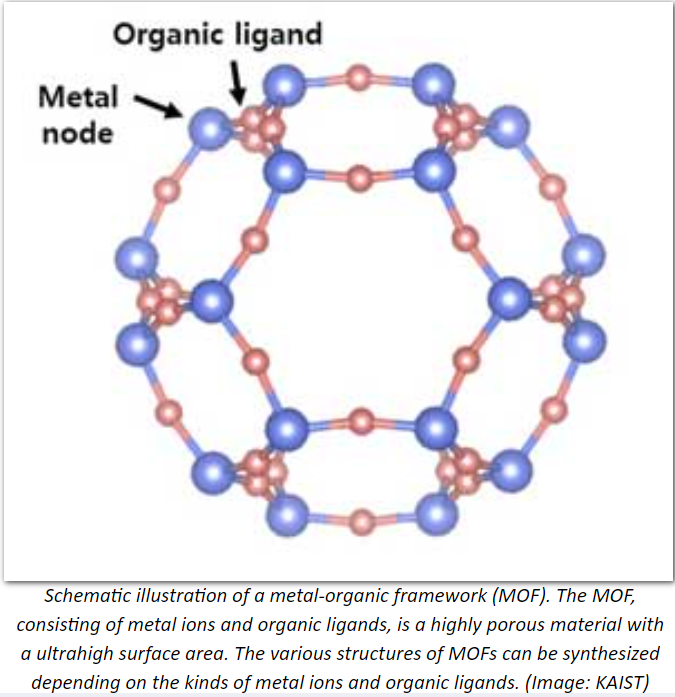
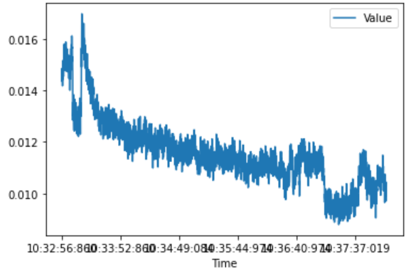

Overview
Metal Organic Frameworks (MOFs) are currently
under intense focus and study in relation to greenhouse gases because they have an exceptionally high surface area and a high capacity for
storing gases. MOFs have the ability to selectively absorb gases into pockets of space within its structure, and therefore are extremely
useful in isolating and capturing certain gases. The MOF used in this research is UiO-66 and UiO-66 functionalized with
NH2 and NO2 .
A large majority of research groups calculate heats of adsorption by differentiating isotherm collected at multiple
temperatures. This is an indirect method for determining heats of adsorption that can result in erroneous values particularly
at low adsorbate coverages. With adsorption calorimetry, the heat generated by the adsorbing event is directly measured with
flux sensors, to record more accurate data. In addition, calorimetry allows one to measure heat of adsorption at cryogenic temps
which makes it possible to resolve heat of adsorption at low coverages.
Purpose
The purpose of this summer research project was to evaluate the MOFs UiO-66 and UiO-66 functionalized with NH2 and
NO2 , to assess the effect NH2 and NO2 have on the adsorption behavior of CO2 and
CH4. Once these values have been experimentally measured, they will be compared to the computational values predicted
by the team in the WFU Physics department. My specific task was to automate the process of calculating the heat of adsorption from 50+ csv
files, each containing at least 2000+ data points to as much as 6000+ data points. I used Python to accomplish this task.
Analysis
 From the initial visualization of the raw data, we see that some changes need
to be made to allow for the use of python in calculating approximations for the area of the curve shows, particularly, the time axis. After importing the data
into a pandas dataframe and checking the data types of the dataframe, python recognized them as objects which does not allow us to directly convert the
timestamps into seconds or peform any other mathematical operations on any of the values in the dataframe. The reason we use seconds is because the thousands of
data points present in each of the csv files only consitute a couple of minutes at most. In the example to the right using Ethylene 50torr Trail 1,
the time ranges from 10:32:56:860 to 10:38:07:097. The time format in which the data was collected is ‘ H:M:S:ms ’ which means that the
time range for this csv file is about 6 minutes. Using a jupyter notebook in VS Code, I developed an algorithm that would open a folder containing the csv files
of various trials, read in the data into a pandas dataframe and output an initial visualization after which some conversions take place that copy the data first
into a list and then an array. Finally, the area was calculated using a Riemann sum to generate a left end point approximation, midpoint approximation, and right
end point approximation. The midpoint approximation was generated using a line i.e. slope intercept form. The results are displayed below.
AREA COMPUTATION USING ETHYLENE 50TORR TRIAL 1
| Approximation Type |
|
Area Approximation |
|
| Left Riemann Sum |
|
0.17599517913204843 |
| Midpoint Riemann Sum |
|
0.1759919262268967 |
| Right Riemann Sum |
|
0.17598867332174492 |